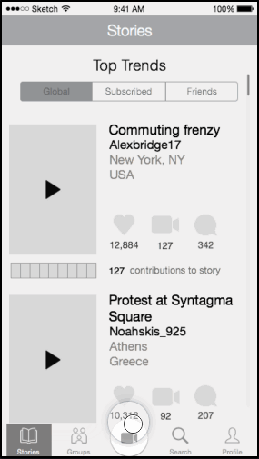

Challenge
Selfie is an app that enables users to make and share their daily narratives, as well as seek out the stories of others around the globe. My partner and I evaluated the current version of the product and advised the client on product development and growth opportunities in a two week timeframe.
Selfie experienced high attrition rates: users engaged for a couple of days and rarely used it thereafter. The client wanted my partner and I to evaluate user needs and interactions of the current version and separately identify opportunities for growth and product development within a two week timeframe. They emphasized the primary focus of the app should enable users to create and develop story.
Evaluate
Usability testing current version
To evaluate the current state of the product, my partner and I conducted usability testing and found that users felt uncomfortable watching the personal video content of unknown users; they didn’t have a vested interest in the lives of people they don’t know. Further, users felt awkward taking videos of themselves with only a front-facing camera option.


This is what the UI looked like when we started usability testing the current product.
Analysis of the Landscape
Usability testing indicated that we needed to gain a better understanding how Selfie fit into the current social media landscape, so we conducted a competitive analysis of the social media market. Our goal was to understand where the role of creating narratives fell amongst competitors.
Key Takeaways
The competitive analysis helped us deduce areas of the crowded social media market that had not yet been cornered. For example, we learned that increased privacy and reduced self-censorship correlated and we used this knowledge as we identified user needs.
Identifying User Needs
Once we learned that users were not likely to engage in storytelling regularly, or with ease, in public forums, we recognized that we needed to get a deeper understanding of prospective user behaviors, needs, motivations, and attitudes with user interviews. From our interpretation of the qualitative data and a literature review, we learned that story is most powerful and engaging if it is contextualized with a personality we know (such as a friend, acquaintance, or celebrity).
Key Takeaways
 Callie taught us that older teens typically turn to video-based social media communication before text or picture-based forms and they primarily used it to collect moments. Jess demonstrated that she often used video-based social media but found it more effortful compared to other forms. Finally, Nate emphasized that he was most comfortable with video-based social media as long as privacy features were within his control.
Callie taught us that older teens typically turn to video-based social media communication before text or picture-based forms and they primarily used it to collect moments. Jess demonstrated that she often used video-based social media but found it more effortful compared to other forms. Finally, Nate emphasized that he was most comfortable with video-based social media as long as privacy features were within his control.
Among all groups, we found that story is a influential experience yet is most engaging when grounded in the preexisting knowledge of people or personas users know.
Synthesis
As we consolidated our data from user interviews, personas, and the competitive analysis, we found that key takeaways fell into three main categories:
Community
Users tend to actively engage in sharing video material most if content is shared amongst friends, family, and friends of friends - this was especially true for Nate. Video self-censorship and sharing increases in public forums: privacy is relevant, especially when it comes to video sharing.
Retention
Retention is guided by notifications and users feeling like they’re missing out on content relevant to their network. This fits well with Jess' motivation to stay connected with friends amidst school, homework, other social media sites, and activities competing with her time.
Collaboration
Part of storytelling is letting a story evolve with the input of others. Callie demonstrated an organically generated 'collection' of moments she and her friends amassed. Using the creative writing exercise ‘exquisite corpse’ as an inspiration, we found that stringing timepoints together would be a unique addition to the market.
Product Design
After evaluating Selfie’s role in the social media landscape, we learned that users seek not only to tell stories, but to build them as well; they indicated a need to create stories with friends as they unfolded in daily life. This blends users’ need to share snippets of their daily lives with building a story among close connections.
Design Principles
User personas showed us that social media is most engaging when it builds and sustains relationships. Consequently, we created design principles to guide us through the process of ideating, wireframing, prototyping, and user testing. Throughout the product design process, we consistently asked ourselves if we were aligned with our principles.
Constraint
Sharing and collaboration generates material with ease when boundaries keep material succinct and attractive.
Clarity
Create a singular identity that focuses on power of story.
Connection
Emphasize sharing instantly to create a narrative with friends.
Psychology
Concentrate on the emotional experience of the user: make sure they feel safe sharing and are aware of where they are in the story.
Key Takeaways
Defining these principles enabled us to prioritize which key features of a collaborative video sharing experience were most important to address first.
App Map
I created an app map to help inform intuitive navigation during the wireframing process.

Users sought more control over the video interface during usability testing, so one of the goals was planning the complexities and constraints of the video interface. Therefore, I included the following features:
uploading from the video librarya front- and back-facing cameraan editing studiofilterstips on cinematography and storytelling techniques
To address users’ privacy concerns, I created two sharing options: global or with friends. This enabled the app to function like a personal messaging app as well as provide users with a public newsfeed.
To drive visibility of a new app like Selfie, I incorporated the option to share the completed story on other social media sites in addition to Selfie.
Rapid Prototyping & Usability Testing
Over the course of five days, I created three prototypes and put them through usability testing. I learned a great deal during each round of testing and made sure that each new prototype reflected that knowledge.
Paper Prototyping
Paper prototyping helped me iron out some early creases. For example, I learned that the stories page was too busy visually and that users got confused when contributing to a story.
Prototype 2
Round 2 helped me identify pain points in adding onto a story and acquainting users to the general concept of the app.
Prototype 3
 Round 3 unearthed nuanced pain points such as which attributes of pages users' attention was drawn to, especially at endpoint pages.
Round 3 unearthed nuanced pain points such as which attributes of pages users' attention was drawn to, especially at endpoint pages.
Wireframes and User Flows
Along with the intuitive navigation of the app map, the goal with wireframes and user flows was to help users understand where they were in the process of creating a story, sharing it with friends, and adding on to a narrative. I took inspiration from the phrase ‘form follows function’ when designing the interactions.
Overall Flow
This is a comprehensive view of how specific user behaviors - creating a story, contributing to a story, and responding to a notification - connect to each other.
Create a story
This is the process users undergo when creating a story. To enable user trust and control, users have the option to share with friends or global after they've created a story.
Contribute to a story
This is the process that follows when users contribute to a story.
Responding to a notification
This flow exemplifies how users respond to a notification and go on to contribute to a story.
Roadmap
Iterating through each round of prototyping illuminated the values I wanted to emphasize in the roadmap. The goal of creating a roadmap was to guide the client when making decisions based on growth and preservation of the product. Each pinciple targets user engagement and product growth.

Result & Key Learnings
This project threw me into UX work without the pressures of looming development for the first time thereby enabling me to dive deeper in to UX work, which gave me the opportunity to work with new tools and iterate more rapidly than before. I used Sketch, Invision App, and POP - Paper Prototyping for the first time. Further, this was my first chance to work with a real client that had high expectations and articulate feedback.
The client created an app based off my idea and you can find it on the app store! It's invigorating to know that my designs are in the marketplace and that users interact with them every day.
The app released on the app store differs from my design in a few different ways. First, the app is called GroupSnap and not Selfie. Second, my interaction design varies from theirs. For example, my buttons were inspired by the saying 'form follows function' so a timeline looks like one, whereas theirs is a collection of thumbnails spread across an entire screen.
Me using GroupSnap, the name the client came up with, with my friends!
This project enabled me to refine my 'UX eye,' learn how to move through a project at breakneck speed while mastering new tools, and adjust to a new client environment. Working with a client who cares deeply for their work was exciting because it gave me access to extremely specific feedback. Finally, seeing my designs on the app store and using an app that I co-created with my friends was thrilling. Each new experience forced me to adapt and appreciate UX design in a whole new way - I take these insights with me as I approach new projects.